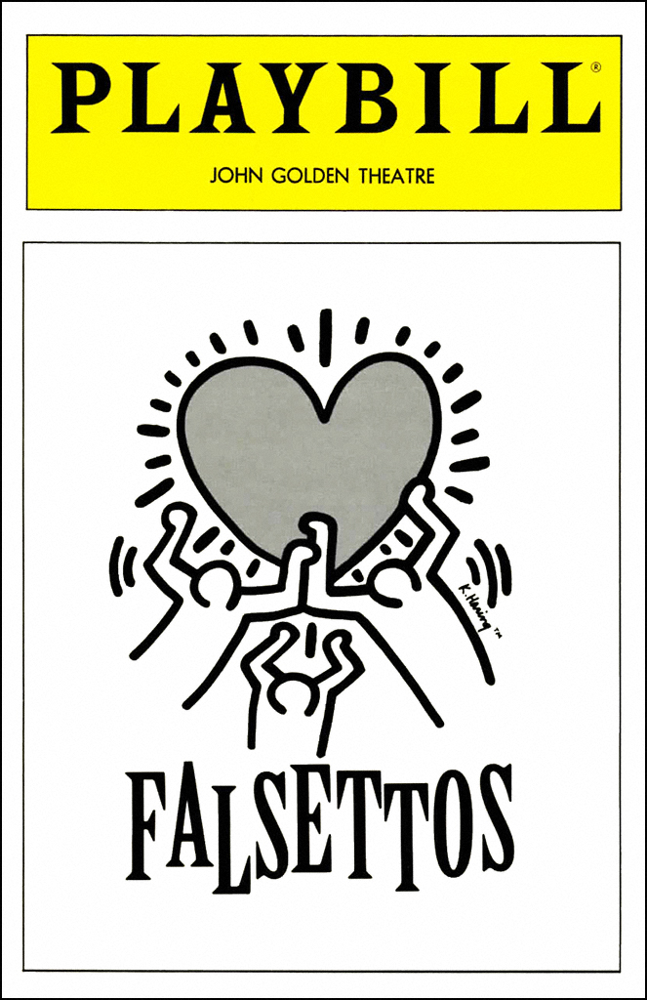
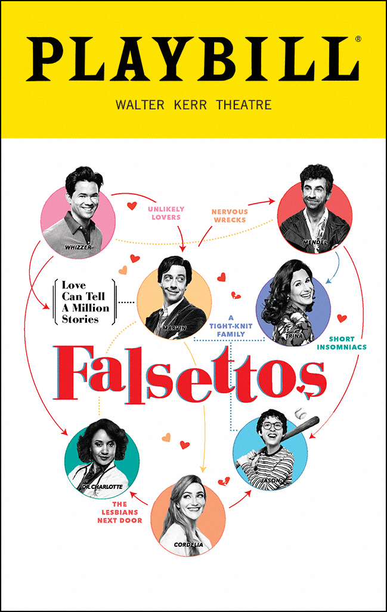

The Marvin Trilogy (The Superior Musicals)

- I'm a psychiatrist get lost.
- A line from the song "Everyone Hates his Parents" made funnier by the fact that the character saying the line is a horrible psychiatrist and should have his licence revoked
- Killing your mother is the merciful thing to do.
- Another line from "Everyone Hates his Parents"
- Look look look look look it's a lesbian from next door.
- This is the best way to enter a room I will not accept slander
- The room is yellow.
- A line from the song "Whizzer Going Down" which is from In Trousers, the original musical of the trilogy
Home